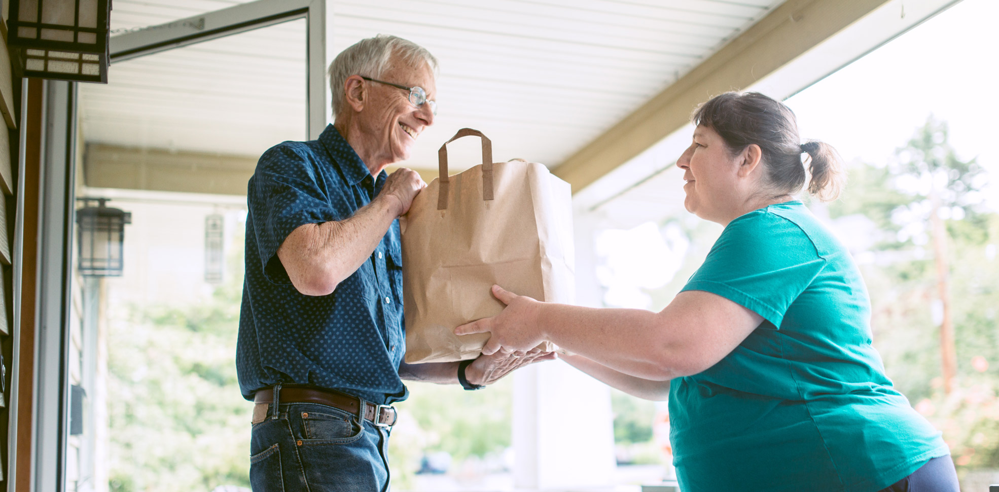

During the pandemic, many people choose to stay home and do grocery shopping online and that's the safest way to get food. However, not everyone knows how to order online, such as seniors and individuals with disabilities. They either don't know how to use a computer or mobile phone or they don't have the ability to use them. So I want to develop a web app, these people can order food with a simple phone call and there will be some volunteers recording their wants.
Although these are many existing volunteer organizations, they can help them to get food. I don't think they are stable and specific. For example, an organization called Help At Your Door assists with transportation, home support, and grocery assistance services in a variety of ways. While my web app will focus on food delivery.
The worker from this website will be the users of the application and access the website. After they receive a phone call from elders or individuals with disabilities they would record their wanted items, then they will view the availability of the item from the website, order them and record them. After doing that, they can check nearby Uber/Lyst drivers who are willing to deliver.